Vela.
Designed for the journey.
Considered beyond it.
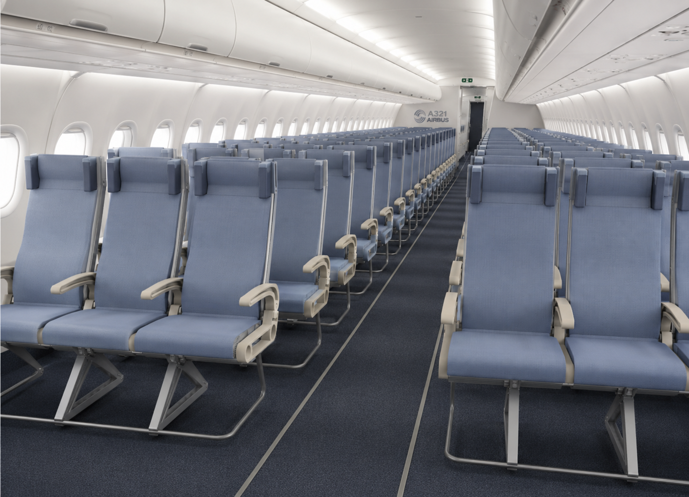
An aircraft seat conceived as a system for comfort, repair and material recovery.
- Discipline
- Sustainable product design
Design engineering - Scope
- Short-haul economy seating
Modular structure & circular recovery - Project evidence
- CAD assembly · Disassembly tree
ECO + MCI analysis · SDE individual project report
01 / RESOLVE THE SEAT AS A SYSTEM
A modular seat
for repair and recovery.
Explore the seat’s comfort modules, structural base and service access.
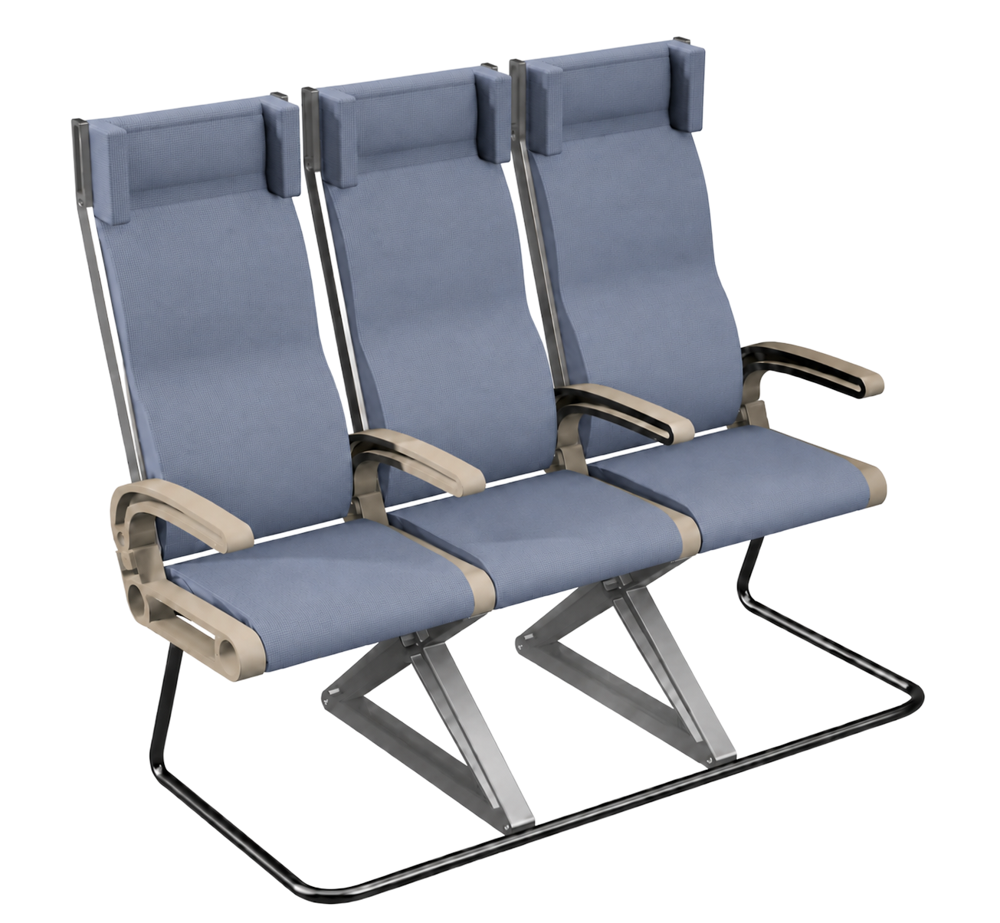
Comfort is a
design requirement.
Contoured cushions, lumbar support and head pillows target posture and pressure relief. Passenger testing remains pending.
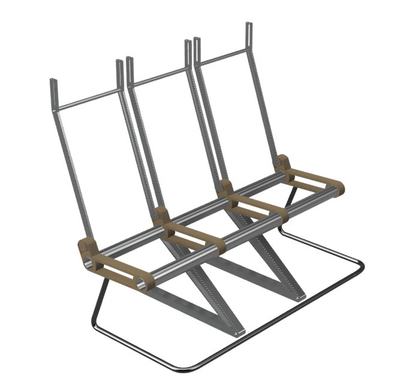
A structure designed
to be accessed.
An aluminium frame and separable modules connect low mass with access for replacement.
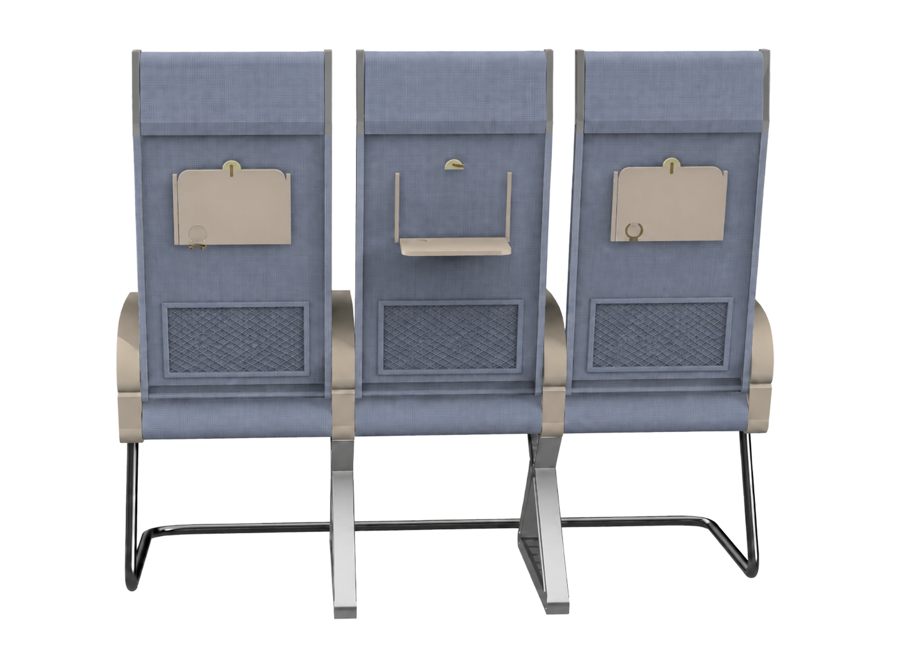
Design the back
for the next repair.
Removable covers and mechanical fasteners avoid bonded joints, supporting repair, cleaning and recovery.
02 / FROM SUSTAINABILITY TO REQUIREMENTS
The brief:
comfort, mass and repair.
Bonded, mixed-material seats are difficult to separate. The brief combines comfort, low mass and economical repair with recoverable materials.
Design target; not a verified seat mass.
EXPLORE THE DESIGN REQUIREMENTS
01 Replaceable, separable modules
Access and replace cushions and panels individually.
02 Recycled, recoverable materials
Select materials that can be separated and recovered.
03 Ergonomic short-haul support
Support posture and pressure relief within economy-class space.
03 / DEVELOP THE MODULAR STRUCTURE
Frame development
& replaceable modules.
Hollow aluminium and an X-support carry replaceable comfort modules. Explore the CAD development.
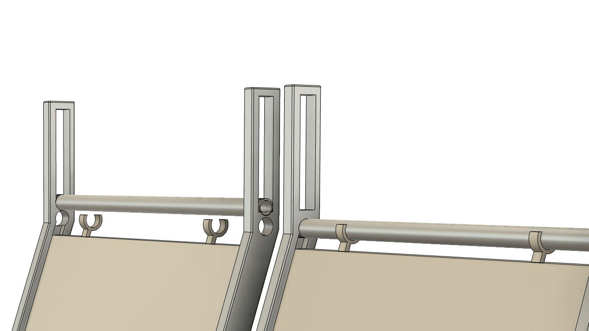
Start with a lighter frame.
Hollow aluminium targets lower mass while supporting replaceable modules.
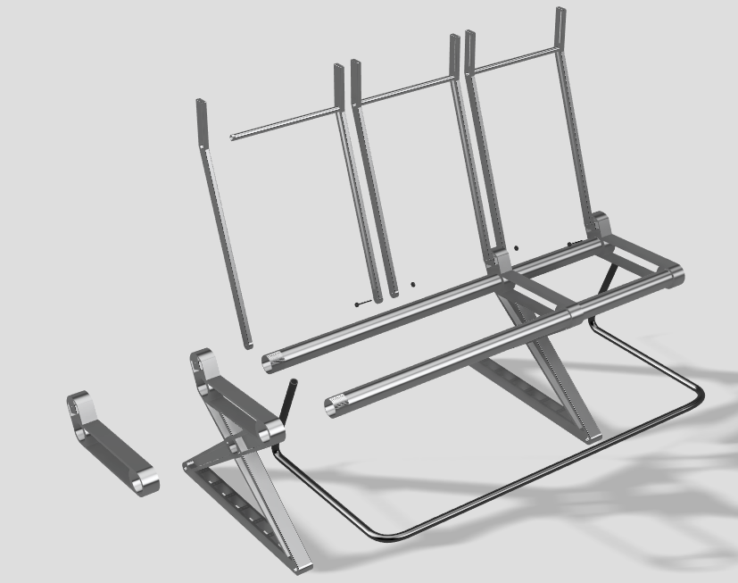
Support the load.
Keep the structure open.
The X-support develops the load-bearing base; strength still requires load testing.
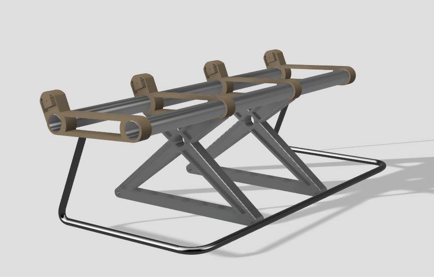
Make the base
part of the system.
Supports and connecting members form an accessible, separable base.
Comfort modules that can come apart.
Clip-on cushions and removable panels are intended to simplify replacement, repair and material separation.
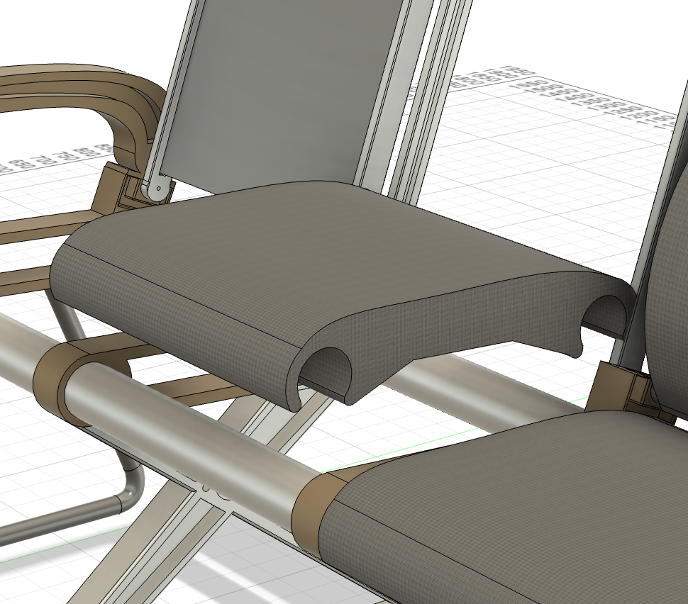
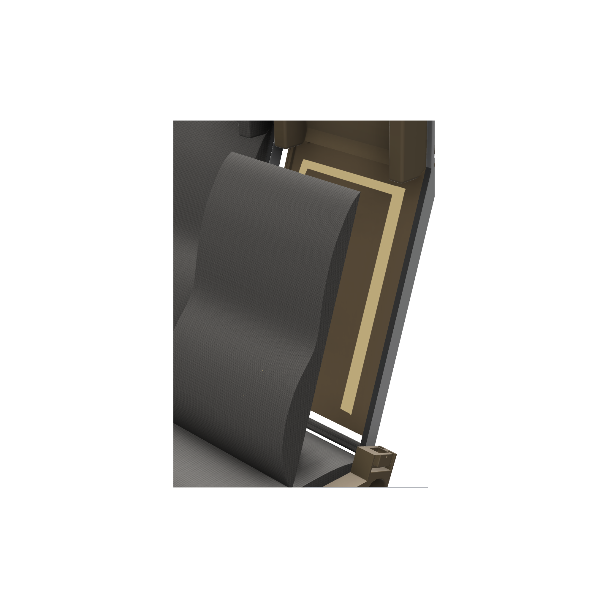
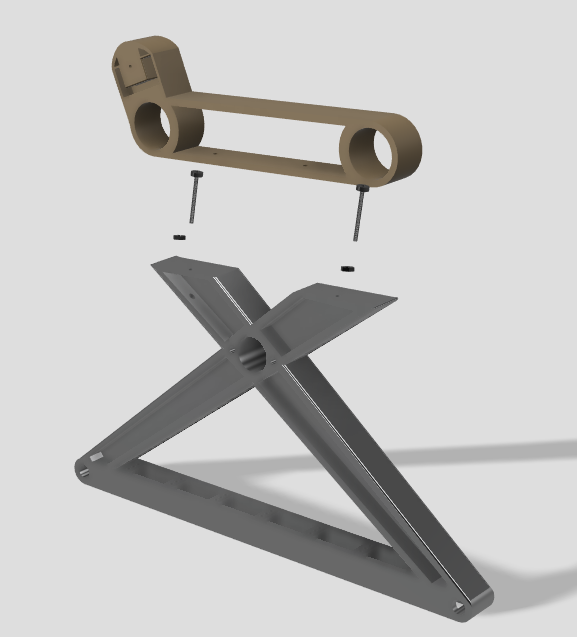
04 / DESIGN FOR CIRCULAR RECOVERY
Disassembly
& circularity analysis.
The disassembly tree maps repair and recovery routes. ECO audit and MCI analysis examine mass and circularity; component tags support traceability.
Connect material choices
with recovery assumptions.
Values from the project worksheet. MCI refers to the Material Circularity Indicator; its result depends on the model’s inputs.
Disassembly tree
Click a blue operation to reveal the next part. Follow the connections, one disassembly step at a time.
Swipe horizontally to follow the connections →
Designed seat → Seat back + Seat base
Plan the way
components come apart.
Follow the seat-back and base routes to separate cushions, panels, armrests and structural parts.
Make the material
assumptions visible.
The worksheet calculates 29.0885 kg and MCI 0.71 from material, collection and longevity assumptions. Maintenance and recovery trials remain pending.
05 / REFLECT & DEFINE THE NEXT VALIDATION
Next: validate
the physical seat.
The CAD and recovery strategy are resolved at concept level. Three physical checks remain.
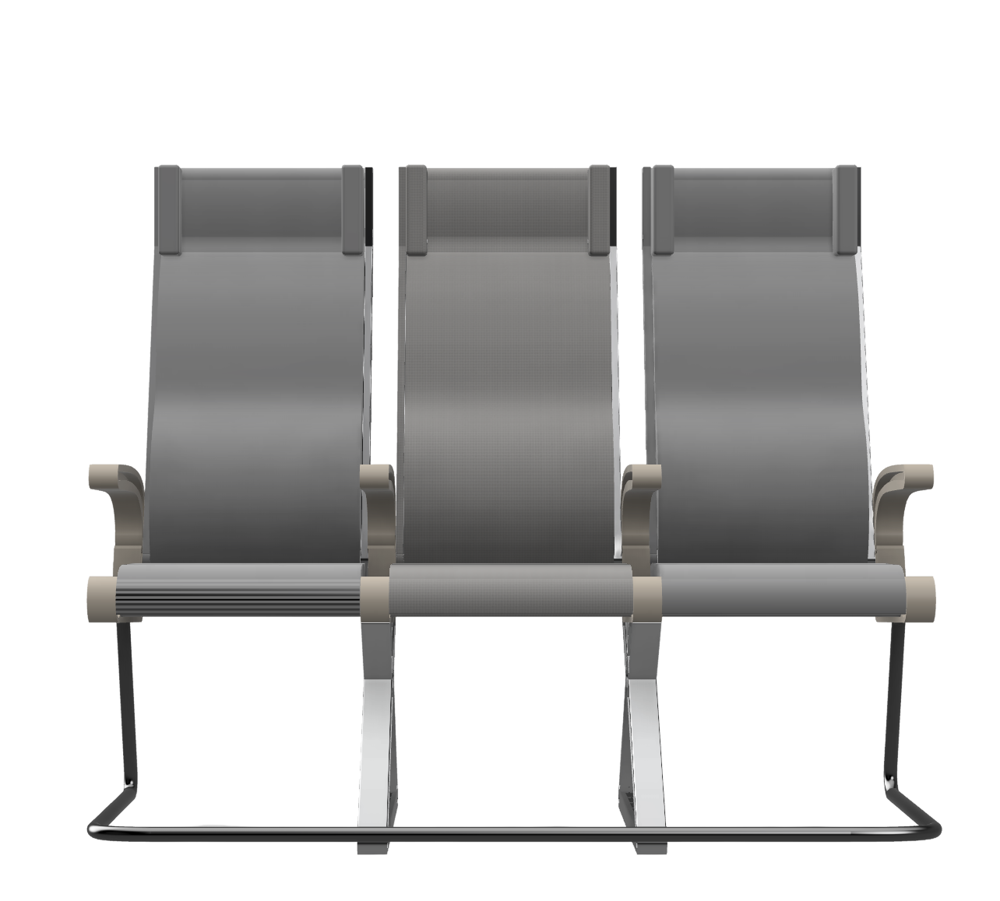
VALIDATION PENDING / EXPLORE NEXT STEPS
01 Structure & materials
Verify structural loads and material flammability.
02 Passenger comfort
Test cushions, lumbar support and head pillows on short-haul journeys.
03 Maintenance & recovery
Trial module replacement, fastener access and material separation.